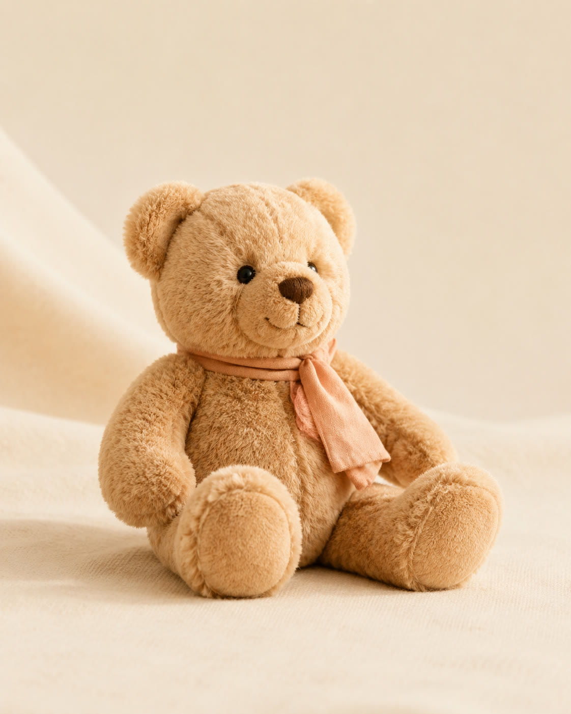
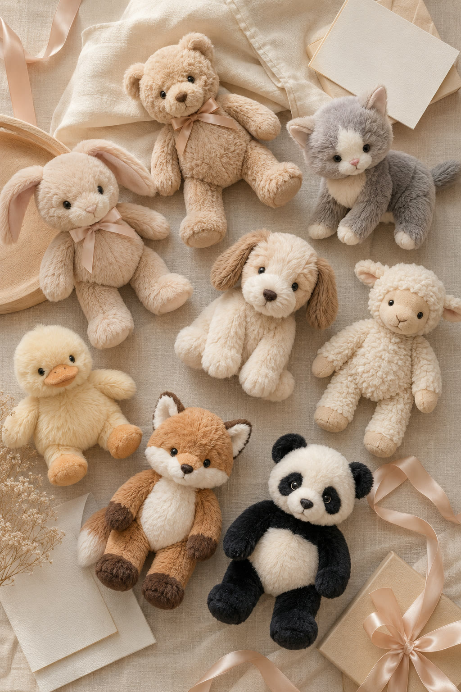
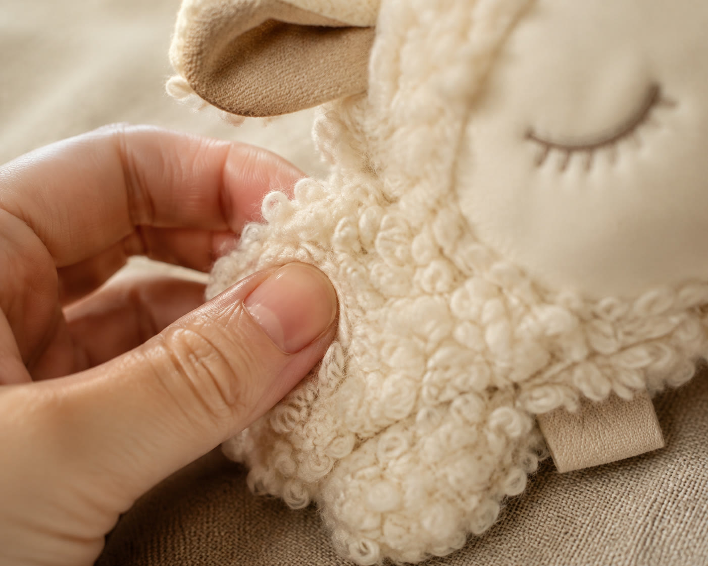
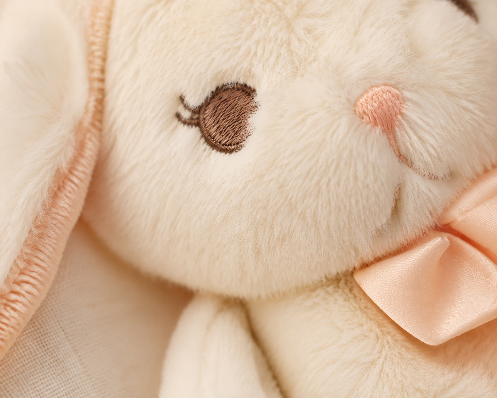

HomeAbout
봉제인형 하나만
만들어 온 공장
태국 라차부리의 I.D. Toys는 1980년부터 재단·봉제·검수·포장 전 공정을 한 지붕 아래에서 처리해 온 봉제인형 전문 제조사입니다.
About — I.D. Toys Co., Ltd.
전 공정이 한 공장 안에서
이루어집니다
I.D. Toys는 태국 라차부리(Ratchaburi)에 자리한 봉제인형 전문 제조사입니다. 원단 재단부터 봉제, 표정 자수, 충전, 검수, 포장까지 전 공정을 한 공장 안에서 처리하기 때문에 품질 편차 없이 납기를 지킬 수 있습니다.
캐릭터 IP의 굿즈화, 기업 판촉물, 브랜드 웰컴 키트, 유아·교육 브랜드의 정식 상품까지 — 도면 그대로 만드는 것과 컨셉을 상품으로 키워내는 것, 두 가지 모두가 우리의 일입니다.


Since 1980
46년째, 인형만
만드는 중입니다
1980년, 재봉틀 한 대에서 시작했습니다. 유행이 수십 번 바뀌는 동안 우리는 한 가지만 팠어요 — 봉제인형.
그래서 지금은 어떤 캐릭터를 가져와도 인형으로 만들 수 있습니다. 짬에서 나오는 바이브, 46년이면 그럴 만하죠.
“트렌드는 계속 바뀝니다.
잘 만든 인형은 안 바뀌고요.”


Quality — 품질과 안전
아이 손에 쥐여도
되는 물건만 공장 문을 나섭니다
봉제인형의 최종 소비자는 대부분 아이들입니다. 그래서 우리는 눈·코를 자수로 마감하고, 출고 전 전 수량이 니들(금속) 검침기를 통과합니다. 유아 안전 기준 시험이 필요한 프로젝트는 시험 성적서 발급 절차를 함께 안내해 드립니다.
- EN71 · KC 등 안전 기준 시험 대응 *세부 인증 보유 현황은 상담 시 안내
- 전 수량 니들 검침 · 봉제 강도 검사
- 브랜드 라벨·택·자수 네임 태그 제작 지원

